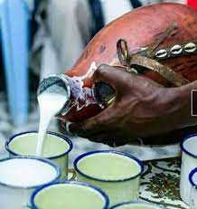

Mursik

DEscription
Kalenjin Secret fermented milk
Ingredients
- Fresh milk
- Charcoal from a special tree
steps
- take some charcoal place it in the sotet
- using a special branch soot the sotet inside
- pour the fresh milk inside the sotet and let it ferment for 3 days